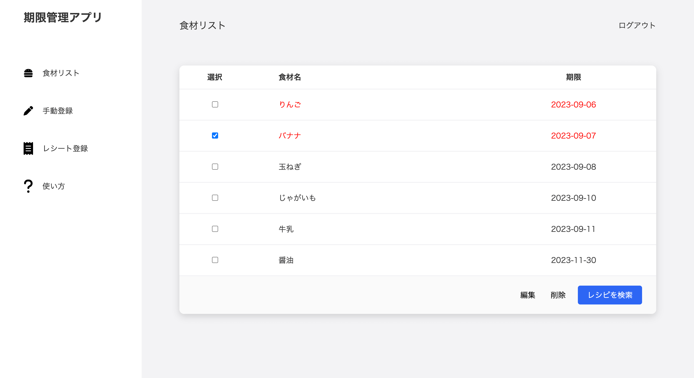

新規登録画面からサインアップ、そしてログインをしましょう。
テスト用に、以下のログイン情報を用意しています。
ユーザー名：test
パスワード：test
ログインが済んだら、食品リスト画面に移動します。
初期状態では、何もありません。以下に、食品リストの例を示します。

このように、期限が本日以前の食品は赤文字で示されます。
また、「レシピを検索」では、チェックした食品のレシピを検索することができます。
購入した食品を、レシートから登録することができます。テスト用に、以下のレシートを用意しています。
レシートの読み取りでは、食品以外のテキストも含まれてしまいます(修正予定)。
購入した食材にチェックを入れて、期限を設定しましょう。